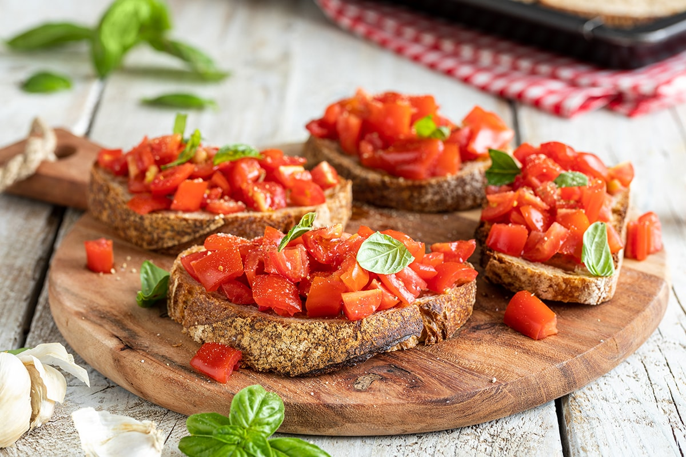

Bruschetta al Pomodoro

What's a Bruschetta:
It consists of a slice of stale bread or bread roasted on the grill or in the oven, on which a clove of garlic is rubbed while hot, which will melt with the bread due to the heat; the slice is then seasoned with extra virgin olive oil and salt and also pepper; the oil should be as tasty as possible; chopped tomato may also be added.
Ingredients:
- Bread
- Garlic
- Virgin Olive Oil
- Salt and Pepper
- Tomato
Steps:
- Cut your bread into slices and toast it.
- While bread it's toasting peel a clove of garlic
- When bread it's ready, rub it with your garlic.
- Optional: If you like it you can add chopped tomato.
- Sprinkle olive oil on the bread, then add salt and pepper.